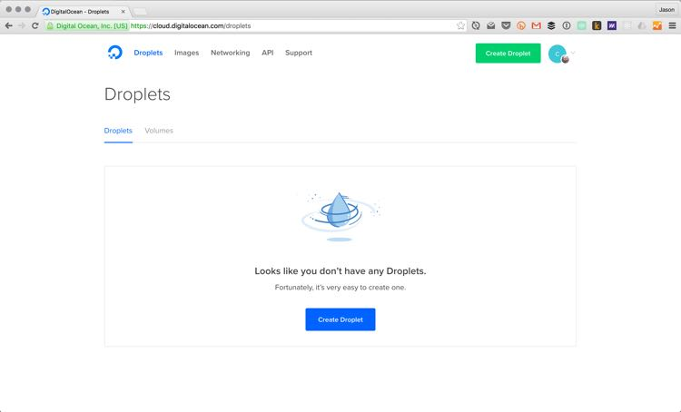
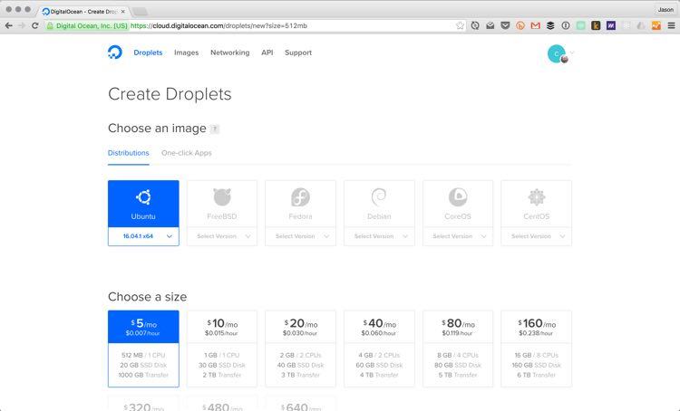
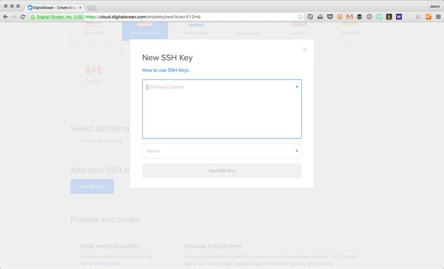
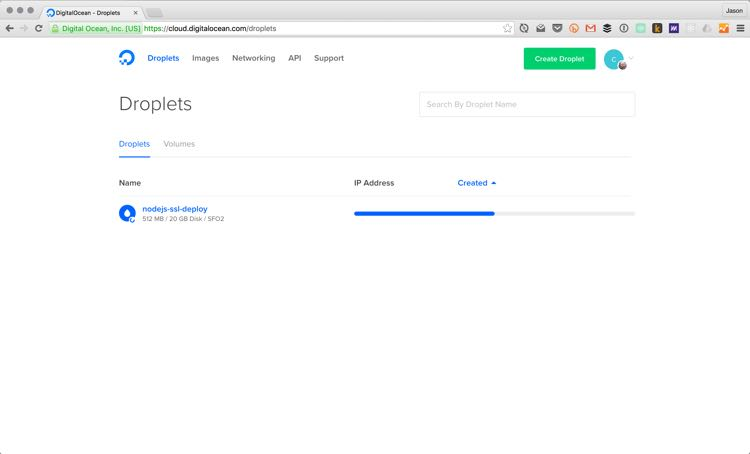
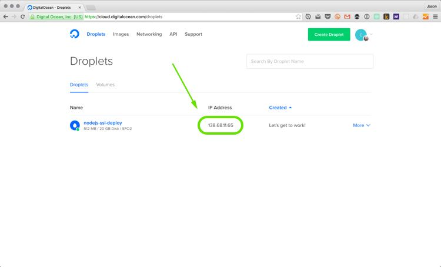
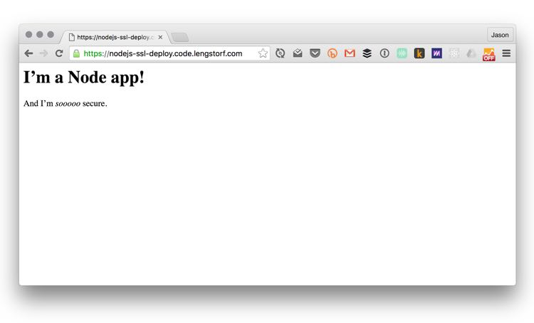

Deploy a Node.js App to DigitalOcean with SSL
This step-by-step tutorial walks through the process of deploying a Node.js app to a DigitalOcean droplet with free SSL from Let’s Encrypt for $5/month.
In this post, we’ll walk through the process, from start to finish, of creating a new server, deploying a Node.js app, securing it (for free!) with an SSL certificate, and pointing a domain name to it.
Watch the video above to see the whole process live — with clever commentary, of course — or jump to just the bits you need in the write-up below.
Prerequisites
- A domain name that you can modify DNS records for.
- A sense of adventure.
Set Up and Configure Your Server
Before we can do anything, we need a server that can be accessed publicly. There are lots of options out there, so don’t feel locked into DigitalOcean — however, for this tutorial it’ll probably be easiest to follow if you’re using exactly the same setup.
Create a new droplet on DigitalOcean.
To start create an account on DigitalOcean, or log into your existing account.
Once you’re logged in, click the “Create Droplet” button at the top of your screen.

Choose the $5/month option with Ubuntu 16.04.1 x64. Select a region closest to your users.

Finally, add your SSH key and
How to find your SSH key
First, open Terminal1 and check for existing SSH keys:
ls -la ~/.sshIf you already have SSH keys set up, you should see a file called id_rsa.pub. (If there’s a file ending in .pub, it’s very likely an SSH key.)
To copy your SSH key, use one of the following commands:
# This copies the key so you can paste with command + Vpbcopy < ~/.ssh/id_rsa.pub
# This prints it in the command line for manual copyingcat ~/.ssh/id_rsa.pubAdd your SSH key to the droplet
Back on the DigitalOcean droplet creation screen, click the “New SSH Key” button and paste your SSH key into the field that opens.

Click “Add SSH Key” to save it, then make sure it’s selected, name your droplet, and hit the big “Create” button to get your server online.

Your new droplet will display its IP address once it’s set up. You can click on it to copy the IP to your clipboard.

Connect to the server using SSH
DigitalOcean droplets are created with a root user, and since we added our SSH keys, we can now log in without a password. Like magic!
# Make sure to replace the IP below with your server's IP addressssh root@192.168.1.1You will most likely be asked if you want to continue connecting the first time you log in. Type yes to continue, and you’ll see something similar to the following:
$ ssh root@138.68.11.65The authenticity of host '138.68.11.65 (138.68.11.65)' can't be established.ECDSA key fingerprint is SHA256:f1qsLkumkNyRNfDVgjJk2R7kRlonuce1IMoEVTL2sfE.Are you sure you want to continue connecting (yes/no)? yesWarning: Permanently added '138.68.11.65' (ECDSA) to the list of known hosts.Welcome to Ubuntu 16.04.1 LTS (GNU/Linux 4.4.0-31-generic x86_64)
* Documentation: https://help.ubuntu.com * Management: https://landscape.canonical.com * Support: https://ubuntu.com/advantage
0 packages can be updated.0 updates are security updates.
The programs included with the Ubuntu system are free software;the exact distribution terms for each program are described in theindividual files in /usr/share/doc/*/copyright.
Ubuntu comes with ABSOLUTELY NO WARRANTY, to the extent permitted byapplicable law.
root@nodejs-ssl-deploy:~#Configure the server with basic security.
Once we’re logged into the server, we need to get a few things configured to keep it secure.2
Create an SSH user
First, we’re going to add a new user with sudo privileges. To do this, run the following command while logged into your droplet:
# You can choose any username you want here.adduser jasonThis command prompts us for a password, and then for some additional, optional details.
Afterward, we can see that our user has been created by running id <your_username>, which should output something like the following:
root@nodejs-ssl-deploy:~# id jasonuid=1000(jason) gid=1000(jason) groups=1000(jason)In order to run some of the commands on the server, such as restarting services, we need to add our new user to the sudo group. Do this by running the following command:
# Don't forget: use your own username hereusermod -aG sudo jasonNow if we run id jason we can see the sudo group has been applied.
root@nodejs-ssl-deploy:~# id jasonuid=1000(jason) gid=1000(jason) groups=1000(jason),27(sudo)Add your SSH key for the new user
Next, we need to add our SSH key to the new user. This allows us to log in without a password, which is important because we’re planning to disable password logins for this server.
# Become the new usersu - jason
# Create a new directory for SSH stuffmkdir ~/.ssh
# Set the permissions to only allow this user into itchmod 700 ~/.ssh
# Create a file for SSH keysnano ~/.ssh/authorized_keysThe nano editor allows us to copy-paste your SSH key — the same one we copied to DigitalOcean when we created the droplet — into the new file, then press control + X to exit. Type Y to save the file, and press enter to confirm the file name.
We can make sure the SSH key is saved by running cat ~/.ssh/authorized_keys; if the SSH key is printed in the terminal, it’s been saved.
# Set the permissions to only allow this user to access itchmod 600 ~/.ssh/authorized_keys
# Stop acting as the new user and become root againexitDisable password login
Since every server has a default root account that’s a target for automated server attacks — and because that account has unlimited power inside the server — it’s a good idea to make sure no one can use it.
After the previous step, you should be logged into your server as root. Let’s make sure the new account works and has sudo access:
# Log out of the server as rootexit
# Log into your server as the new userssh jason@138.68.11.65Inside, we need to update the SSH configuration to disable password logins, and to disable logging in as root altogether.
To do this, use the following command to open the SSH configuration file for editing:
sudo nano /etc/ssh/sshd_configInside, you need to update two settings:
- Find
PermitRootLogin yesand change it toPermitRootLogin no - Find
#PasswordAuthentication yesand change it toPasswordAuthentication no
Save the file by pressing control + X, then Y, then enter.
Finally, restart the SSH service with this command:
# Reloads the configuration we just changedsudo systemctl reload sshdTest your login by opening a new tab in Terminal (command + T on Mac) and logging into your server again.
If we log in as our new user, everything works as expected. However, if we try to log in as root, we get an error:
$ ssh root@138.68.11.65Permission denied (publickey).Set up a basic firewall
Next, we’re going to configure a simple firewall. We’re going to configure it to deny all traffic except through standard web traffic ports (80 for HTTP, and 443 for HTTPS), and to allow SSH logins.
This, in theory at least, should eliminate a lot of security risks on our server. (But again — this is not a security article; these are just basic precautions.)
We’re going to run three commands to configure the firewall — called ufw — and then we’ll enable it. Enter the following while logged into the server:
# Enable OpenSSH connectionssudo ufw allow OpenSSH
# Enable HTTP trafficsudo ufw allow http
# Enable HTTPS trafficsudo ufw allow https
# Turn the firewall onsudo ufw enableTo check the status of the firewall, run sudo ufw status, which will give you the following:
jason@nodejs-ssl-deploy:~$ sudo ufw statusStatus: active
To Action From-- ------ ----OpenSSH ALLOW Anywhere80 ALLOW Anywhere443 ALLOW AnywhereOpenSSH (v6) ALLOW Anywhere (v6)80 (v6) ALLOW Anywhere (v6)443 (v6) ALLOW Anywhere (v6)Get Your App Up and Running
Now that the server is set up, we can get our app installed.
Install Git.
In order to get a copy of our app to this server, we’re going to use Git. Fortunately, Ubuntu makes it really easy to install common tools, so all we need to do is run this command:
sudo apt-get install gitWe can validate that Git was installed properly by running git --version:
jason@nodejs-ssl-deploy:~$ git --versiongit version 2.7.4Set up Node.js.
Node.js is a little more complex than Git, because there are several different versions of Node that are used in production environments. Therefore, we need to update apt-get with the right version for our app before we install it.
Tell apt-get which Node.js version to download
The folks at NodeSource have made it really easy to install our desired Node version. For this tutorial, we’ll be using the latest 6.x release.
Run the following commands to download and execute the setup script:
curl -sL https://deb.nodesource.com/setup_6.x | sudo -E bash -This takes a few seconds to complete.
Install Node.js v6.x
With the NodeSource script complete, we can simply use apt-get to install Node.js:
sudo apt-get install nodejsOnce it’s complete, we can verify that node is available by running node --version:
jason@nodejs-ssl-deploy:~$ node --versionv6.3.1Clone the app
Now we can actually clone a copy of our app to the server — things are really getting exciting now.
It doesn’t matter where you install the app, so let’s create an apps dir in our user’s home folder and clone the app into a folder named after our domain — this makes it really easy to remember which app is which.
# Make sure you’re in your home foldercd ~
# Create the new directory and move into itmkdir appscd apps/
# Clone your app into a new directory named for your domaingit clone https://github.com/jlengstorf/tutorial-deploy-nodejs-ssl-digitalocean-app.git app.example.comTest the app
To make sure your app is installed and working, move into the new folder and start it:
# Move into the app directorycd app.example.com
# Start the appnode appThe example app listens at http://localhost:5000, so we can test if it’s working by opening a new Terminal session, logging into our server, and making a curl request to the app.
jason@nodejs-ssl-deploy:~$ curl http://localhost:5000/<h1>I’m a Node app!</h1><p>And I’m <em>sooooo</em> secure.</p>Awesome — we have a running app. Now we just need to make it accessible to the outside world.
We can exit from the test session (the one we just ran the curl command in), and we can stop the app in our other session using control + C.
Start Your App Using a Process Manager
Simply starting the app manually is technically enough to get the app deployed, but if the server restarts, that means we have to manually start the app again.
And in production apps, we want to eliminate as many — if not all — manual steps to get the app deployed. So we’re going to use a process manager called PM2 to run our app. This also gives us benefits like easy-to-access logs, and a simple way to start, stop, and restart the app.
PM2 also allows us to start the app automatically when the server restarts, which means one less thing we need to worry about.
Install PM2
Unlike the other tools we’ve installed, pm2 is a Node package. We install it using the npm command, which is the default package manager for Node.js.
sudo npm install -g pm2Start your app using PM2
With PM2 installed, we can now start the app like this:
# Make sure you're in the app directorycd ~/apps/app.example.com
# Start the app with PM2pm2 start appOnce the app is started, we see the status displayed:
And, conveniently, the app is running without locking up our session. In the same session we’re able to run curl http://localhost:5000 to make sure it’s running properly:
jason@nodejs-ssl-deploy:~/apps/app.example.com$ curl http://localhost:5000/
<h1>I’m a Node app!</h1><p>And I’m <em>sooooo</em> secure.</p>Start your app automatically when the server restarts
We’re almost done with getting the app running — just one more step.
The last thing to do is to make sure that when the server restarts, PM2 starts our app again.
This is a two-step process, which we kick off by running pm2 startup systemd:
jason@nodejs-ssl-deploy:~/app.example.com$ pm2 startup[PM2] You have to run this command as root. Execute the following command:sudo su -c "env PATH=$PATH:/usr/bin pm2 startup systemd -u jason --hp /home/jason"PM2 prints out a command that we need to run using sudo. Copy-paste that to finish the process.
sudo su -c "env PATH=$PATH:/usr/bin pm2 startup systemd -u jason --hp /home/jason"This will step through the process of updating the server to run PM2 on startup, and then you’re all set.
Now we’ve got a running app — in the next section, we’ll make the app securely accessible to the rest of the world!
Get a Free SSL Certificate With Let’s Encrypt
SSL was a big hurdle for a long time for two reasons:
- It was expensive.
- It was hard.
Fortunately, some very smart, very kind-hearted people created Let’s Encrypt, which is:
- Free
- Easy
So now there’s really no excuse not to set up SSL for our domains.
Install Let’s Encrypt
To start, we need to install some tools that Let’s Encrypt depends on, then clone the letsencrypt repository to our server.
# Install tools that Let’s Encrypt requiressudo apt-get install bc
# Clone the Let’s Encrypt repository to your serversudo git clone https://github.com/letsencrypt/letsencrypt /opt/letsencryptConfigure your domain to point to the server
Log into your DNS provider. I use CloudFlare; you’ll want to log into whichever service you either bought your domain name through (Namecheap and GoDaddy, for example), or the service you use to manage your DNS (such as CloudFlare or DNSimple).
Add an A record for your domain that points to your droplet’s IP address.
To check that the domain is pointing to your droplet, run the following (make sure to replace app.example.com with the domain you just configured):
dig +short app.example.com# output should be your droplet’s IP address, e.g. 138.68.11.65Generate the SSL certificate.
Now that the domain is pointed to our server, we can generate the SSL certificate:
# Move into the Let’s Encrypt directorycd /opt/letsencrypt
# Create the SSL certificate./certbot-auto certonly --standaloneThe tool will run for a while to initialize itself, and then we’ll be asked for an admin email address, to agree to the terms, and to specify our domain name or names. Once that’s done, the certificate will be stored on the server for use with our app.
For now, that’s all we need. We’ll come back to these in a minute when we configure the domain.
Setup auto-renewal for the SSL certificate
For security, Let’s Encrypt certificates expire every 90 days, which seems pretty short. (By contrast, most paid SSL certificates are valid for at least a year.)
It turns out, though, that Let’s Encrypt has an one-step command to renew certificates:
/opt/letsencrypt/certbot-auto renewThis command checks if the certificate is near its expiration date and, when necessary, it generates an updated certificate that’s good for another 90 days.
Now, it would be a huge pain in the ass if we had to manually log into the server and renew the certificate four times a year — and most likely we’d end up forgetting at least once — so we’re going to use a built-in tool called cron to handle the renewal automatically.
To set this up, run the following command in the terminal to edit the server’s cron jobs:
sudo crontab -eWe get an option for which editor to use here. Since nano is easier than the others, we’ll stick with that.
When the editor opens, head to the bottom of the file and add the following two lines:
00 1 * * 1 /opt/letsencrypt/certbot-auto renew >> /var/log/letsencrypt-renewal.log30 1 * * 1 /bin/systemctl reload nginxThe first line tells cron to run the renewal command, with the output logged so we can check on it when necessary, every Monday at 1 in the morning.
The second restarts NGINX — which we haven’t set up yet, so don’t worry — at 1:30 to make sure the new cert is being used.
Save and exit by pressing control + X, then Y, then enter.
That’s it for the SSL cert. The last thing left is to make your app accessible by visiting our domain name in a browser.
Point Your Domain to the App
In order to make our app accessible, we need to send visitors to our domain to our app. To do this, we’ll be using NGINX as a reverse proxy because it’s faster and less painful than handling it through Node.js.
Install NGINX
Installing NGINX is no different from most of the other tools we’ve downloaded so far. Use apt-get to download and install it:
sudo apt-get install nginxMake sure all traffic is secure
Next, we need to make sure that all traffic is served over SSL. To do this, we’ll add a redirect for any non-SSL traffic to the SSL version. That way, if someone visits http://app.example.com, they’ll be automatically redirected to https://app.example.com.
To do this, we need to edit NGINX’s configuration files. Run the following command to open the file for editing:
sudo nano /etc/nginx/sites-enabled/defaultInside, delete everything and add the following:
# HTTP — redirect all traffic to HTTPSserver { listen 80; listen [::]:80 default_server ipv6only=on; return 301 https://$host$request_uri;}Save and exit by pressing control + X, then Y, then enter.
Create a secure Diffie-Hellman Group
It only takes a couple extra minutes to create a really secure SSL setup, so we might as well do it. One of the ways to do that is to use a strong Diffie-Hellman group, which helps ensure that our secure app stays secure.
Run the following command on your server:
sudo openssl dhparam -out /etc/ssl/certs/dhparam.pem 2048This takes a minute or two — encryption should be hard for computers — and when it’s done we can move on for now. We’ll use this file in the next section.
Create a configuration file for SSL
Since I’m not a security expert, we’re going to defer to an actual security expert for NGINX’s SSL settings.
We need to create a new file on our server to hold these settings — if we add another domain to this server, we can reuse them this way — which we’ll do with the following command:
sudo nano /etc/nginx/snippets/ssl-params.confInside, we can copy-paste the following settings.
# See https://cipherli.st/ for details on this configurationssl_protocols TLSv1 TLSv1.1 TLSv1.2;ssl_prefer_server_ciphers on;ssl_ciphers "EECDH+AESGCM:EDH+AESGCM:AES256+EECDH:AES256+EDH";ssl_ecdh_curve secp384r1; # Requires nginx >= 1.1.0ssl_session_cache shared:SSL:10m;ssl_session_tickets off; # Requires nginx >= 1.5.9ssl_stapling on; # Requires nginx >= 1.3.7ssl_stapling_verify on; # Requires nginx => 1.3.7resolver 8.8.8.8 8.8.4.4 valid=300s;resolver_timeout 5s;add_header Strict-Transport-Security "max-age=63072000; includeSubDomains; preload";add_header X-Frame-Options DENY;add_header X-Content-Type-Options nosniff;
# Add our strong Diffie-Hellman groupssl_dhparam /etc/ssl/certs/dhparam.pem;Save and exit by pressing control + X, then Y, then enter.
Configure your domain to use SSL
This is the last configuration step, I promise.
Now that we’ve got a certificate, a strong Diffie-Hellman group, and a secure SSL configuration, all that’s left to do is actually set up the reverse proxy.
Open the site configuration again:
sudo nano /etc/nginx/sites-enabled/defaultInside, add the following below the block we added earlier:
# HTTPS — proxy all requests to the Node appserver { # Enable HTTP/2 listen 443 ssl http2; listen [::]:443 ssl http2; server_name app.example.com;
# Use the Let’s Encrypt certificates ssl_certificate /etc/letsencrypt/live/app.example.com/fullchain.pem; ssl_certificate_key /etc/letsencrypt/live/app.example.com/privkey.pem;
# Include the SSL configuration from cipherli.st include snippets/ssl-params.conf;
location / { proxy_set_header X-Real-IP $remote_addr; proxy_set_header X-Forwarded-For $proxy_add_x_forwarded_for; proxy_set_header X-NginX-Proxy true; proxy_pass http://localhost:5000/; proxy_ssl_session_reuse off; proxy_set_header Host $http_host; proxy_cache_bypass $http_upgrade; proxy_redirect off; }}Save and exit by pressing control + X, then Y, then enter.
This configuration listens for connections to our domain on port 443 (the HTTPS port), uses the certificate we generated to secure the connection, and then proxies our app’s output out to the browser.
Before we start the server, we should test the NGINX configuration with sudo nginx -t. If we didn’t make any typos and everything looks good, we’ll get the following:
jason@nodejs-ssl-deploy:~$ sudo nginx -tnginx: the configuration file /etc/nginx/nginx.conf syntax is oknginx: configuration file /etc/nginx/nginx.conf test is successfulEnable NGINX
The very last step in this process is to start NGINX.
sudo systemctl start nginxTest Your App
And now: the big moment. We can now visit our domain in a browser, and we’ll see our app.

The configuration steps get pretty mind-numbing toward the end, but there’s a huge payoff: we can now bask in the glory of a server that took about 30 minutes to set up, costs $5/month, and — as a bonus — gets an A+ for SSL security.
Not bad for 30 minutes’ worth of setup, right?
Additional Resources
- Common firewall rules and commands
- How to configure NGINX as a reverse proxy for subdomains
- Setting up a Ubuntu 16.04 server with a new user and a basic firewall
- DigitalOcean’s guide to setting up a Node.js app for production
- Securing NGINX with Let’s Encrypt